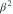
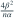

Gamma 样本形状  已知、速率
已知、速率  未知。若 无偏估计
未知。若 无偏估计
已知、速率 未知。若 无偏估计 
，且满足 C-R 正则条件，则其方差下界为？- A
- B
- C
- D

我已思考，展开答案与解析
正确答案：B
- 样本信息量为 ，待估函数导数为 。
- 下界 。
易错提醒参数函数的平方不能仅通过对原下界平方得到。
JYSG · 432精选 · 册内清华大学432·2024年·五(2)；函数下界；PDF第116页（印刷页114）
原题知识点延伸
已知、速率 未知。若 无偏估计 
，且满足 C-R 正则条件，则其方差下界为？
JYSG · 432精选 · 册内清华大学432·2024年·五(2)；函数下界；PDF第116页（印刷页114）
原题知识点延伸